Aplikasi Pencatatan Harian Berbasis Flutter
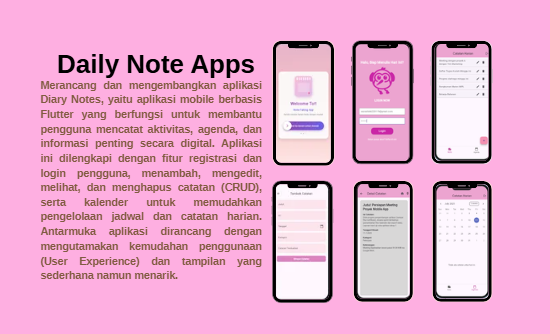
Daily Notes App merupakan aplikasi mobile berbasis Flutter yang dikembangkan untuk membantu pengguna mencatat aktivitas, agenda, dan catatan harian secara praktis. Aplikasi ini terintegrasi dengan Firebase Authentication dan Cloud Firestore sehingga data dapat disimpan secara online dan diakses kembali dengan aman.
• Mobile App Developer
• UI Designer
• Firebase Database Integration
Proyek ini dikembangkan sebagai media pembelajaran dalam membangun aplikasi mobile menggunakan Flutter dan Firebase. Selain melatih kemampuan pengembangan aplikasi, proyek ini juga bertujuan menerapkan konsep autentikasi pengguna, pengelolaan data secara real-time, serta perancangan antarmuka yang sederhana dan mudah digunakan.
Beberapa tampilan berikut merupakan cuplikan antarmuka aplikasi yang memperlihatkan fitur utama dan alur penggunaan Daily Notes App. Galeri ini hanya menampilkan sebagian tampilan untuk memberikan gambaran umum mengenai fungsi aplikasi.
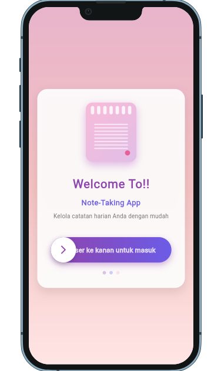
Welcome Screen
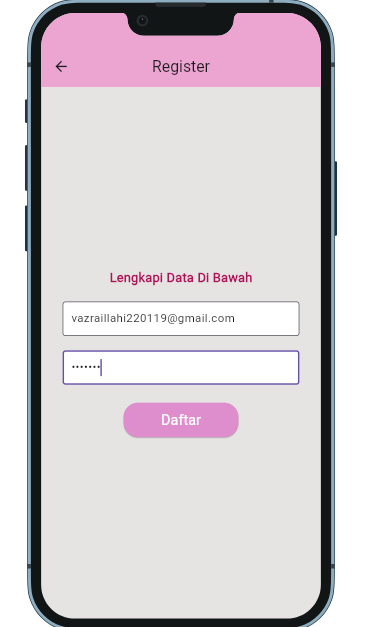
Register
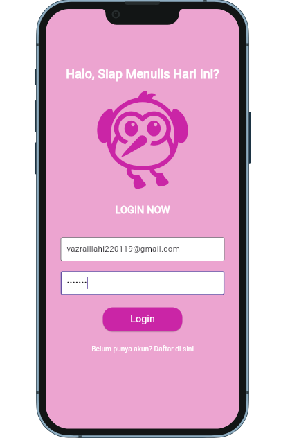
Login
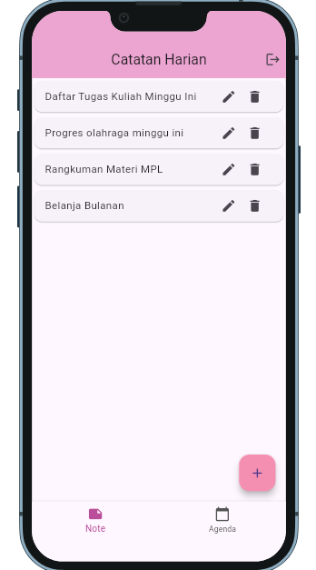
Home (Before Adding Notes)
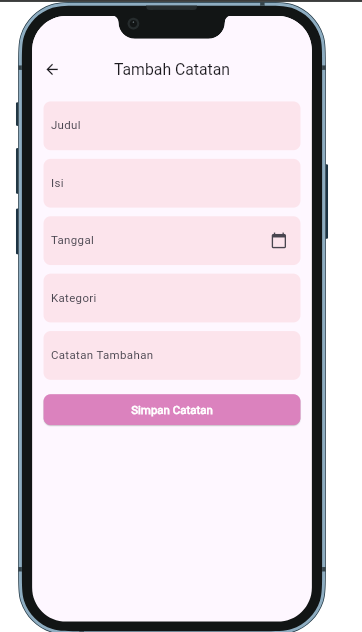
Add Note Form
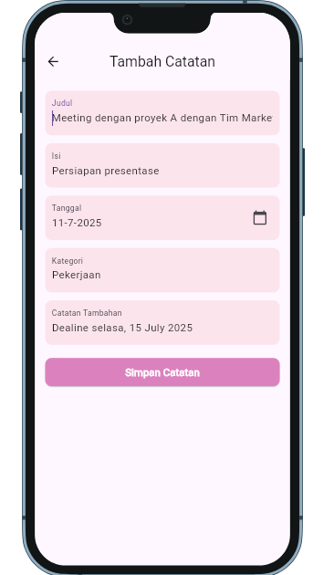
Create Note
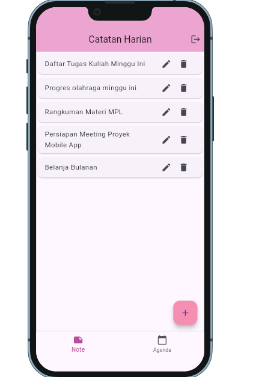
Home (After Adding Notes)
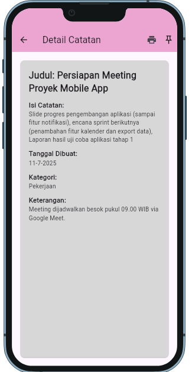
Note Details
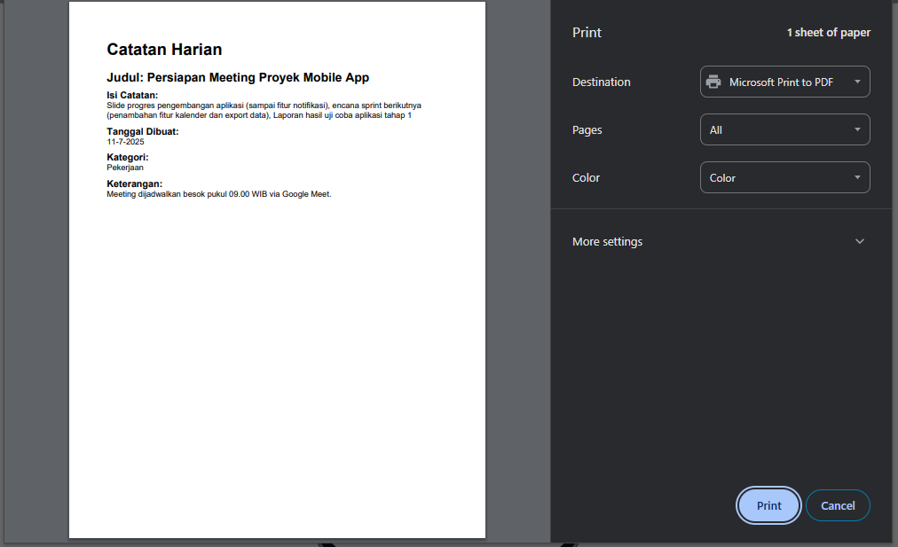
Print Note
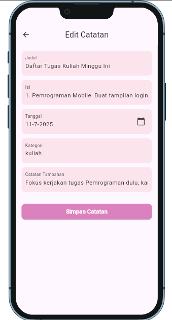
Edit Note
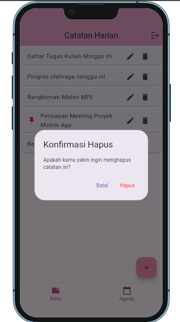
Delete Note
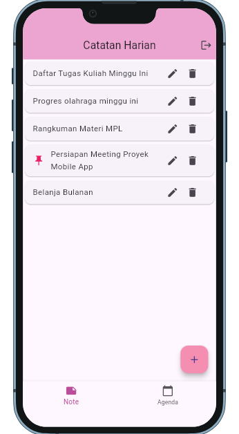
Pin Note
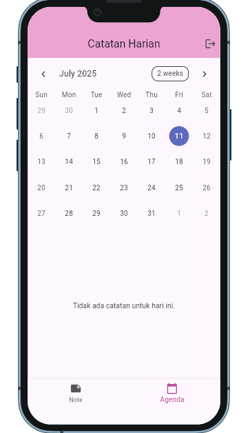
Calendar